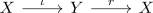
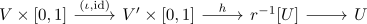

retract of semi locally contractible space as semi locally contractible space
Proposition
Let $X,Y$ be topological spaces, where $Y$ is semi locally contractible and

Then $X$ is semi locally contractible
Proof
Let $x \in X$ and $U$ a neighbourhood. Then $r^{-1}[U]$ is a neighbourhood of $\iota[x]$ as $r \circ \iota[x] = x \in U$ By assumption there exists a neighbourhood $V' \subseteq r^{-1}[U]$ with a nullhomotopy.
\begin{align*}
H: V' \times [0,1] \rightarrow r^{-1}[U]
\end{align*}
Then $V \coloneqq \iota^{-1}[V']$ is a neighbourhood of $x$ and

is a nullhomotopy of the inclusion map
\begin{align*}
\iota: V \rightarrow U
\end{align*}